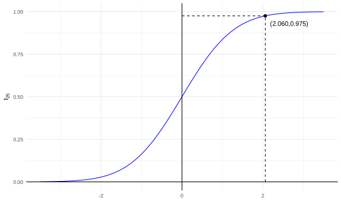
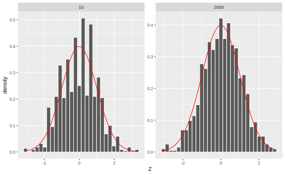

Capítulo 7 Intervalos de confianza
7.1 Intervalos de confianza para la media de una distribución normal
Dado \(\theta\) un parámetro en \(\mathbb{R}\) hemos estudiado procedimientos para encontrar estadísticos \(T\in \mathbb R\) para estimarlo. La limitación que tenemos acá es que no sabemos que tan aleatorio es \(T\). Entonces podemos sustituir este estadístico \(T\) con otros dos estadísticos \(T_1\) y \(T_2\) de modo que sepamos que \[\begin{equation*} T_1 \leq \theta \leq T_2 \end{equation*}\]
En caso que \(\theta \in \mathbb{R} ^{k}\) se puede construir un conjunto de estadísticos \(T_1, \ldots, T_{k^\prime}\) con \(k^\prime = 2k\) tal que
\[\begin{equation*} \theta \in [T_1, T_2] \times \cdots \times [T_{k^\prime-1}, T_{k^\prime}] \end{equation*}\]
7.2 Caso normal.
En el caso normal, \(\bar X_n\) es un estimador puntual de \(\mu\). ¿Será posible encontrar un estimador por intervalos?
Para efectos didácticos, vamos a empezar al revés de lo que usualmente se acostumbra.
Defina \(U = \dfrac{\sqrt{n}(\bar X_n-\mu)}{\sigma'} \sim t_{n-1}\). Si \(c>0\),
\[\begin{align*} \mathbb P[-c<U<c] & = \mathbb P \bigg[ -c<\dfrac{\sqrt{n}(\bar X_n-\mu)}{\sigma'} <c\bigg]\\ & = \mathbb P \bigg[-\dfrac{c\sigma'}{\sqrt n} < \bar X_n - \mu <\dfrac{c\sigma'}{\sqrt n}\bigg] \\ & = \mathbb P \bigg[ \bar X_n -\dfrac{c\sigma'}{\sqrt n} < \mu < \bar X_n + \dfrac{c\sigma'}{\sqrt n}\bigg] \end{align*}\]
El intervalo
\[\begin{equation*} T = \bigg[\bar X_n - \dfrac{c\sigma'}{\sqrt n},\bar X_n + \dfrac{c\sigma'}{\sqrt n}\bigg] \end{equation*}\]
es un intervalo aleatorio que “contiene” a \(\mu\). Si queremos restringir la probabilidad anterior, tome \(\gamma \in (0,1)\): \[ \mathbb P(\mu\in T) = \gamma. \]
Para que se cumpla lo anterior, seleccione \(c\) tal que
\[\begin{align*} \gamma = \mathbb P( \mu \in T) & = F_{t_{n-1}}(c)-F_{t_{n-1}}(-c) \\ & = F_{t_{n-1}}(c) - [1-F_{t_{n-1}}(c)]\\ & = 2F_{t_{n-1}} - 1 \end{align*}\]
Entonces
\[ \dfrac{\gamma+1}2 = F_{t_{n-1}}(c) \implies c = F_{t_{n-1}}^{-1}\left(\dfrac{\gamma+1}2 \right). \]
Definición. Si \(X\) es una variable aleatoria continua con distribución \(F\) (monótona creciente), entonces \(x=F^{-1}(p)\) es el cuantil de orden \(p\) de \(F\) (\(p\)-cuantil).
El intervalo aleatorio
\[\begin{equation*} \bigg[\bar X_n - F_{t_{n-1}}^{-1}\left(\dfrac{\gamma+1}2 \right)\dfrac{\sigma'}{\sqrt n},\bar X_n + F_{t_{n-1}}^{-1}\left(\dfrac{\gamma+1}2 \right)\dfrac{\sigma'}{\sqrt n}\bigg] \end{equation*}\]
contiene a \(\mu\) con probabilidad \(\gamma\).
*Definición. Sea \(X = (X_1,\dots,X_n)\) una muestra con parámetro \(\theta\). Sea \(g(\theta)\) una característica de la distribución que genera la muestra. Sea \(A < B\) dos estadísticos que cumplen (\(\forall \theta\)): \[ \mathbb P [A<g(\theta)<B]\geq \gamma.\quad (*) \]
Al intervalo \((A,B)\) le llamamos intervalo de confianza con coeficiente \(\gamma\) para \(g(\theta)\) (intervalo de confianza al \(100\gamma\) para \(g(\theta)\)). En el caso que \((*)\) tenga una igualdad, el intervalo es exacto.
Nota. Si observamos \(X\), calculamos \(A=a\), \(B=b\). Entonces \((a,b)\) es el valor observado de un intervalo de confianza.
Ejemplo. Se mide la lluvia con nubes inyectadas con “sulfato de plata” con \(n=26\) observaciones. Se desea hacer inferencia sobre \(\mu\), la cantidad de lluvia media (escala logarítmica). Para \(\gamma = 0.95\), se calcula
\[ c=F^{-1}_{t_{25}}\left(\dfrac{1+\gamma}2\right) =F^{-1}_{t_{25}}(0.975) = 2.060 \]
Note que \(\frac{1+\gamma}{2}=\) \(0.975\) y el segundo valor se obtiene de
una tabla de valor de la \(t\)-student o de la expresión qt(p = 0.975, df = 26-1) = \(2.06\)

El intervalo de confianza para \(\mu\) al \(95\%\) es \[\bar X_n \pm \underbrace{0.404}_{\frac{2.060}{\sqrt{26}}}\sigma'\]
Si \(\bar X_n = 5.134\) y \(\sigma' = 1.6\) el valor observado del intervalo de confianza al \(95\%\) para \(\mu\) corresponde a
\[[5.134-0.404\cdot1.6, 5.134+0.404\cdot1.6]= [4.47,5.78]\]
Interpretación. El intervalo observado \([4.48,5.78]\) contiene a \(\mu\) con un nivel de confianza del \(95%\). Usualmente a \(\dfrac{c\sigma'}{\sqrt{n}}\) se le llama margen de error (MOE).
Interpretación gráfica. El proceso de construir un intervalo de confianza, quiere decir que si usted repitiera ese experimento muchas veces, el \(100\gamma\%\) (e.g, 95% o 99%) de la veces, el intervalo escogido tendría el parámetro real de la población \(\theta\).
Ejemplo interactivo sobre intervalos de confianza. Tomado de (R Psycologist)[https://rpsychologist.com/d3/ci/]
7.3 Intervalos de confianza abiertos
Si \(\gamma\) es el nivel de confianza dado, sea \(\gamma_1<\gamma_2\) tal que \(\gamma_2 -\gamma_1 = \gamma\). Sea \(U = \dfrac{\sqrt n}{\sigma'}(\bar X_n-\mu)\).
Si \[ A= \bar X_n - T_{n-1}^{-1}(\gamma_1)\dfrac{\sigma'}{\sqrt n} \text{ y } B= \bar X_n + T_{n-1}^{-1}(\gamma_2)\dfrac{\sigma'}{\sqrt n}, \]
se cumple que \((A,B)\) es un intervalo de confianza al \(100\gamma\) ya que
\[ \mathbb P[\mu \in (A,B)] = \mathbb P[T_{n-1}^{-1}(\gamma_1)<U<T_{n-1}^{-1}(\gamma_2)] = \gamma_2-\gamma_1 = \gamma. \]
Definición (Intervalos de confianza abiertos). Bajo las condiciones anteriores, si \(A\) es un estadístico que satisface \(\forall \theta\):
\[\mathbb P [A<g(\theta)]\geq \gamma,\]
A \(A\) se le llama límite inferior de confianza al \(100\gamma\) y al intervalo \((A,\infty)\) es el intervalo de confianza inferior al \(100\gamma\).
De forma análoga, si \(B\) satisface: \[\mathbb P [g(\theta)<B]\geq \gamma,\] a \((-\infty,B)\) se le llama intervalo de confianza superior para \(g(\theta)\), con nivel \(\gamma\). Si hay igualdad, el intervalo es exacto.
Ejemplo. En el caso normal, encuentra \(B\) tal que \(\mathbb P(\mu<B) = \gamma\). Se sabe que
\[F_{t_{n-1}}(c) = \mathbb P(U>-c) = \mathbb P \left(\dfrac{\sqrt n(\mu - \bar X_n)}{\sigma'}<c\right).\]
Entonces \[\gamma = \mathbb P\left(\mu < \bar X_n\dfrac{\sigma'}{\sqrt n}c\right).\]
Tome \(c\) tal que \[F_{t_{n-1}}(-c) = \gamma \implies c = -F_{t_{n-1}}(\gamma)\]
Por lo tanto \[B = \bar X_n - \dfrac{\sigma'}{\sqrt{n}}F^{-1}_{t_{n-1}}(\gamma).\]
7.4 Intervalos de confianza en otros casos
Ejemplo. Tiempos de vida, \(n=3\), \(X_i\sim \text{Exp}(\theta)\).
Si \(T = \sum_{i=1}^3X_i\), \(\theta T\sim \Gamma(3,1)\).
Queremos calcular un intervalo de confianza superior para \(\theta\) al \(100\delta\) (exacto): \(\mathbb P[\theta<B] = \gamma\).
Si \(G\) es la función de distribución de la gamma, sabemos que
\[\begin{equation*} \gamma = \mathbb{P}[\theta T<G^{-1}(\gamma)] = \mathbb{P}\bigg[\theta<\dfrac{G^{-1}(\gamma)}{T}\bigg]. \end{equation*}\]
El límite superior es \(\dfrac{G^{-1}(\gamma)}{T}\).
Entonces el intervalo de confianza para este caso es
## [1] 0.000000 2.420941Definición. Sea \(X = (X_1,\dots,X_n)\) una muestra de una distribución \(F_\theta\). Sea \(V(X,\theta)\) una variable aleatoria cuya distribución no depende de \(\theta\). Decimos que \(V\) es una cantidad pivotal.
Los intervalos de confianza se determinan a partir de un proceso de inversión de la cantidad pivotal.
Encuentre \(r(v,x)\) tal que
\[r(V(X,\theta)) = g(\theta) \quad (*)\]
y \(g\) es una función cualquiera.
Del ejemplo anterior, \(V(X,\theta) = \theta T\), \[r(V(X,\theta),X) = \dfrac{V(X,\theta)}T = g(\theta) = \theta.\]
Teorema. Bajo las condiciones anteriores, si \(V\) existe sea \(G\) su c.d.f. y asume que \(G\) es continua. Asuma que \(r\) en es cierta y asuma que \(r(v,x) \nearrow\) en \(v\) para cada \(x\). Sea \(0<\gamma<1\) y \(\gamma_2>\gamma_1\) tal que \(\gamma_2-\gamma_1 = \gamma\). Entonces los extremos del intervalo de confianza para \(g(\theta)\) al \(100\gamma\) son \[A=r(G^{-1}(\gamma_1),X), \quad B=r(G^{-1}(\gamma_2),X).\]
Ejemplo. \(X_1,\dots, X_n \stackrel{i.i.d}{\sim} N(\mu,\sigma^2)\). Encuentra A, B tales que \(\mathbb P[A<\sigma^2<B] = \gamma\).
Se sabe que \[\dfrac{n\hat\sigma^2}{\sigma^2}\sim \chi^2_{n-1}.\] Tome \(V(X,\sigma^2) = \dfrac{n\hat\sigma^2}{\sigma^2}\). Entonces \[\gamma = \mathbb P[\chi^2_{n-1,\gamma_1}<V(X,\sigma^2)<\chi^2_{n-1,\gamma_2}]\]
donde \(\gamma = \gamma_2-\gamma_1\). Tome \[r(v,X) =\dfrac{\sum(X_i -\bar X_n) ^2}{v} = \dfrac{n\hat\sigma}{v}.\]
Invirtiendo el intervalo, \[\gamma = \mathbb P \bigg[ \underbrace{\dfrac{\sum(X_i -\bar X_n) ^2}{\chi^2_{n-1,\gamma_2}}} _{A} <\sigma^2<\underbrace{\dfrac{\sum(X_i -\bar X_n) ^2}{\chi^2_{n-1,\gamma_1}}}_B\bigg]\]
El IC para \(\sigma^2\) al \(100\delta\) es
\[ \Bigg[ \dfrac{\sum(X_i -\bar X_n) ^2}{\chi^2_{n-1,\gamma_2}}, \dfrac{\sum(X_i -\bar X_n) ^2}{\chi^2_{n-1,\gamma_1}}\Bigg].\]
Por ejemplo
## [1] 0.95## [1] 913.301## [1] 1088.487## [1] 3700.114Finalmente el intervalo es
## [1] 3.399319 4.051363NOTA: Las cantidades pivotales no siempre existen. Esto ocurre principalemente con las distribuciones discretas
7.4.1 Intervalos de confianza aproximados.
Sean \(X_1,\dots, X_n \stackrel{i.i.d}{\sim}F_{\mu}\) donde \(\mathbb{E}[X_i] = \mu\) y \(\text{Var}(X_i) = \sigma^2\) (conocida). Note que \[D = \mathbb P[A<\mu<B] = \mathbb P \bigg[-z_{\frac{1+\gamma}2}<\dfrac{\sqrt n(\bar X_n-\mu)}{\sigma} <z_{\frac{1+\gamma}2}\bigg] \stackrel{TLC}{\approx} \gamma.\]
Así, \[D \underset{n\to\infty}{\approx} \Phi\left(z_{\frac{1+\gamma}2}\right)-\Phi\left(-z_{\frac{1+\gamma}2}\right) = \gamma.\]
Ejercicio. El intervalo de confianza correspondiente para \(\mu\) es
\[ \bar X_n \pm z_{\frac{1+\gamma}2}\dfrac{\sigma}{\sqrt n}. \]
Considere \(U = \dfrac{\bar X_n - \mu}{\sigma'/\sqrt n}\). \(U\) es pivotal, pero no necesariamente una \(t_{n-1}\).
Considere que \((\sigma')^2 = \dfrac{n}{n-1}\hat \sigma^2\) y además \(\hat\sigma^2\) es el MLE de \(\sigma^2\) y por lo tanto consistente.
\[\begin{align*} \hat{\sigma}^2 &\xrightarrow[]{\mathbb{P}}\sigma^2 \\ ((\sigma')^2 &\xrightarrow[]{\mathbb{P}}\sigma^2). \end{align*}\]
Recuerde que si \(X_n\xrightarrow[]{d}Z\) y \(Y_n\xrightarrow[]{\mathbb{P}}a\), entonces \(X_nY_n \xrightarrow[]{d}aZ\).
Por lo tanto, \[ \underbrace{\dfrac{\bar X_n-\mu}{\sigma/\sqrt n}}_{\xrightarrow[]{d} N(0,1)} \cdot \underbrace{\dfrac{\sigma/\sqrt n}{\sigma'/\sqrt n}}_{\xrightarrow[]{\mathbb P}1} \xrightarrow[]{d}N(0,1)\]
Entonces \(U\xrightarrow[]{d}N(0,1)\).
Como consecuencia
\[ \mathbb P \bigg[-z_{\frac{1+\gamma}2}<\dfrac{\bar X_n-\mu}{\sigma'/\sqrt n} <z_{\frac{1+\gamma}2}\bigg] \stackrel{TLC}{\approx} \gamma. \]
y el IC aproximado para \(\mu\) al \(100\gamma\)
\[\bar X_n \pm z_{\frac{1+\gamma}2}\dfrac{\sigma'}{\sqrt n}.\]
Ejemplo. Si \(X_1,\dots, X_n\sim \text{Poi}(\theta)\), \(\mu =\sigma^2 = \theta\). Por TLC, \[\sqrt n\dfrac{\bar X_n-\theta}{\sqrt{\theta}}\xrightarrow[]{d}N(0,1).\] Entonces
\[ \mathbb P[|\bar X_n-\theta|<c] = \mathbb P\bigg[\dfrac{\sqrt n|\bar X_n-\theta|}{\sqrt \theta}<\dfrac{c\sqrt n}{\sqrt \theta}\bigg] \approx 2\Phi\left(\dfrac{c\sqrt n}{\sqrt \theta}\right)-1. \]
Explicación del fenómeno: En este caso recuerden que \(\bar{X}_n\) es una variable aleatoria. Lo que dice el teorema del límite central es que conforme \(n\) es grande, la distribución de \(\bar{X}_n\) (centrada y escalada apropiadamente) converge a una normal estándar.
Xbar <- data.frame(n = numeric(), Z = numeric())
idx <- rep(x = c(10, 2000), times = 1000)
for (k in 1:length(idx)) {
muestra <- rpois(n = idx[k], lambda = 5)
Xbar[k, "Z"] <- sqrt(idx[k]) * (mean(muestra) - 5) / sqrt(5)
Xbar[k, "n"] <- idx[k]
}
ggplot(Xbar) +
geom_histogram(mapping = aes(x = Z, y = ..density..), color = "white") +
stat_function(fun = dnorm, args = list(mean = 0, sd = 1), color = "red") +
facet_wrap(. ~ n, scales = "free")
7.4.2 Transformaciones estabilizadoras de la varianza
[Ver página 365 del libro de texto. }
¿Cómo transformar \(X_n\) para que tenga varianza constante? Note que en el caso anterior se necesitó saber explícitamente el valor exacto de \(\theta\) para hacer el ejercicio.
Por el método Delta, la varianza “aproximada” de \(\alpha(\bar X_n)\) es \[\left( \dfrac{\alpha'(\mu)}{a_n}\right)^2 =\left( \dfrac{\alpha'(\mu)\sigma}{\sqrt n}\right)^2 = \dfrac{\alpha'(\mu)^2\sigma^2(\mu)}{n}.\] Si se desea que la varianza sea constante con respecto a \(\mu\),
\[\begin{align*} \alpha'(u)^2\sigma^2(\mu) &= 1 \\ \implies \alpha'(\mu) & = \dfrac{1}{\sigma(\mu)} \quad (\sigma(\mu)>0)\\ \implies \alpha(\mu) &= \int_{a}^{\mu} \dfrac{dx}{\sigma(x)}dx \end{align*}\]
donde \(a\) es una constante arbitraria que hace la integral finita (y fácil de calcular).
Del ejemplo anterior (Poisson), recuerde que \(\sigma ^{2} = \theta = \mu\), entonces se podría tomar que \(\sigma(\mu) = \sqrt{\mu}\) y por lo tanto definimos
\[ \alpha(\mu) = \int_{0}^\mu\dfrac{dx}{\sqrt x} = 2\sqrt \mu \]
Por el método Delta,
\[
2\bar X_n^{\frac12} \underset{n \text{ grande}}{\sim}
N\left(2\theta^{\frac 12},\dfrac1n\right)
\]
De esta manera
\[\mathbb P[|2\bar X_n^{\frac12}-2\theta^{\frac12}|<c] =\mathbb P\Bigg[\dfrac{|2\bar X_n^{\frac12}-2\theta^{\frac12}|}{\sqrt{1/n}}<\sqrt nc\Bigg] \approx 2\Phi(\sqrt nc)-1 \]
Desarrollando, \[\mathbb P[-c+2\bar X_n^{\frac12}<2\theta^{\frac 12}<c+2\bar X_n^{\frac12}]\approx 2\Phi(\sqrt nc)-1 \]
Se despeja \(c\) tal que \[\Phi(\sqrt n c) = \dfrac{1+\gamma}2\implies c = \dfrac 1{\sqrt n} z_{\frac{1+\gamma}2}.\]
El intervalo para \(2\theta^{\frac 12}\) es \[\bigg[2\bar X_n^{\frac 12} -\dfrac 1{\sqrt n} z_{\frac{1+\gamma}2},2\bar X_n^{\frac 12} +\dfrac 1{\sqrt n} z_{\frac{1+\gamma}2}\bigg]\]
set.seed(42)
X <- rpois(n = 1000, lambda = 5)
Xbar <- mean(X)
z <- qnorm(p = 0.975)
c(2 * sqrt(Xbar) - 1 / sqrt(1000) * z, 2 * sqrt(Xbar) + 1 / sqrt(1000) * z)## [1] 4.371529 4.495488Para estimar el IC para \(\theta\), vea que si \(y=2x^{\frac12} \implies x = \dfrac{y^2}{4}\). Aplicando esta transformación al intervalo anterior, se obtiene
\[\bigg[\dfrac 14 \left(2\bar X_n^{\frac 12} -\dfrac 1{\sqrt n} z_{\frac{1+\gamma}2}\right)^2,\dfrac 14 \left(2\bar X_n^{\frac 12} +\dfrac 1{\sqrt n} z_{\frac{1+\gamma}2}\right)^2\bigg].\]
c((1 / 4) * (2 * sqrt(Xbar) - 1 / sqrt(1000) * z)^2, (1 / 4) * (2 * sqrt(Xbar) + 1 / sqrt(1000) * z)^2)## [1] 4.777567 5.052354